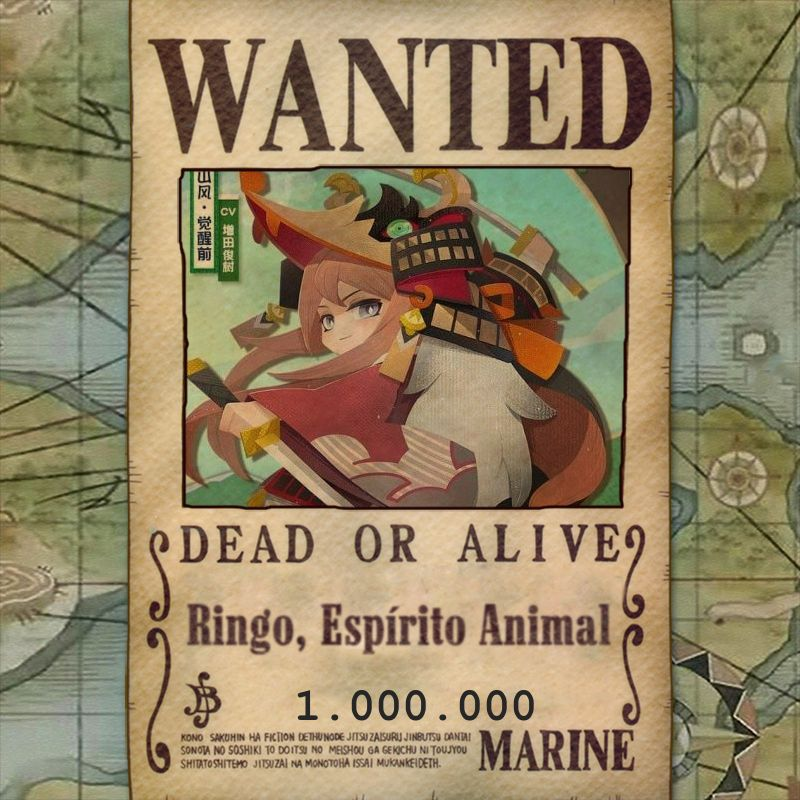

Os Relish do Rei Doce
Divisões únicas, com suas personalidades baseadas em quem as comanda. São os membros dos Rei Doce organizados em sub-divisões.


Aliados
Tomoe
”ESSA É A GRAÇA, HANZO! DESAFIAR OS REIS!”
Dispensa apresentações, uma guerreira implacavel. Fez uma aliança valiosa com os Rei Doce, a pedido do próprio capitão.
Klaus
”Saturn está morto. Eu estou prestes a encarar os deuses e caminhar de cabeça erguida até o inferno.”
O terceiro melhor espadachim do mundo, conhecido por suas lendárias façanhas, um homem com muita história para contar.
Elizabeth
”Mesmo que ninguém acredite em você, levante o peito e grite em desafio!!”
Uma agradavel aliada, amiga pessoal do Rei Doce. Apesar da aparência gentil, é uma excelente lutadora, com os poderes de uma Akuma no Mi!